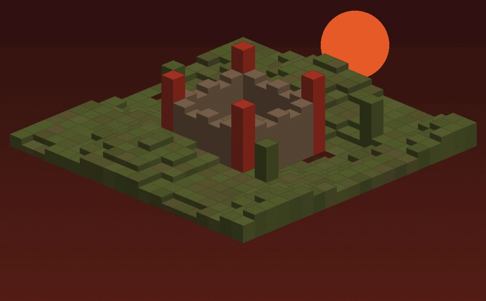

Каждый великий город начинается с одного блока. На нашем сервере у вас есть полная свобода для творчества: стройте уютные дома, огромные замки или целые города вместе с друзьями.
С чего начать
Выберите место, которое вам нравится. Это может быть тихая поляна у реки или высокие горы. Соберите базовые материалы (дерево, камень) и начните с простого дома.
Стройте вместе
Приглашайте друзей для совместного строительства. Обсудите стиль и распределите задачи. Вместе можно построить гораздо больше и интереснее.

Не бойтесь экспериментировать. Ошибки — это часть творчества. Главное, чтобы вам нравилось то, что вы создаете.
Читать правила